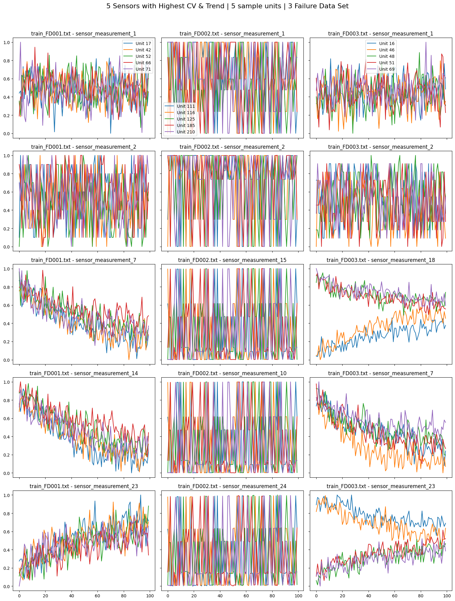
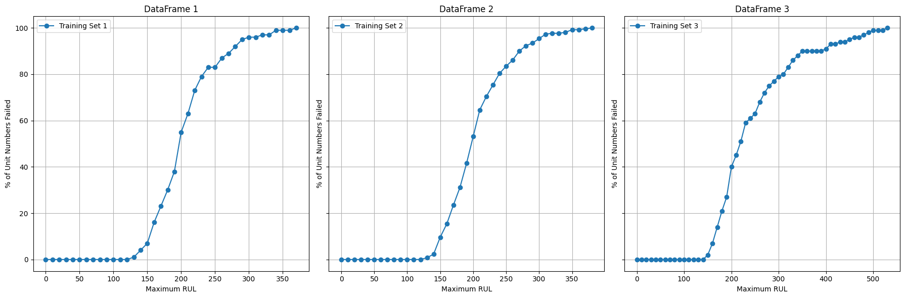
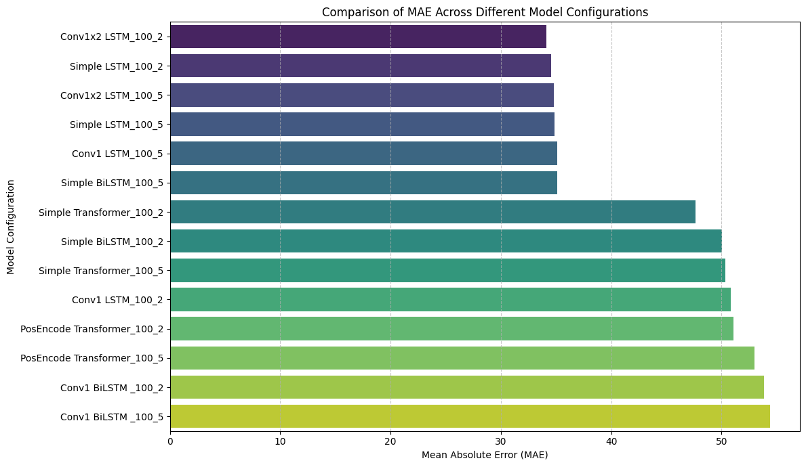
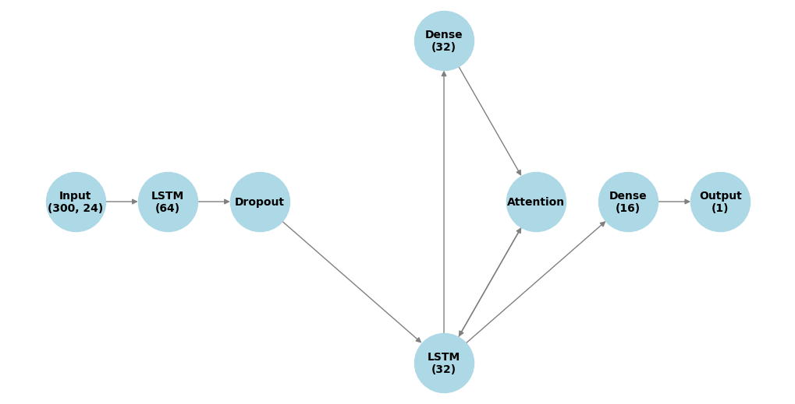
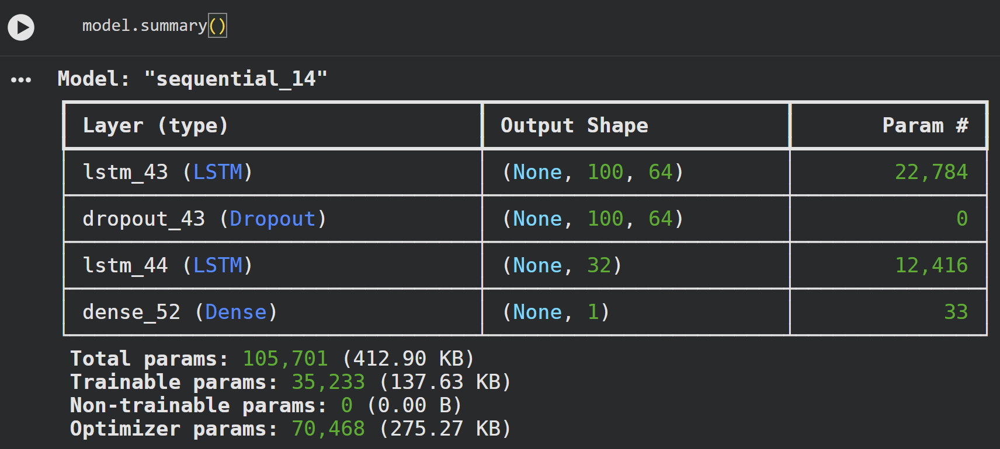
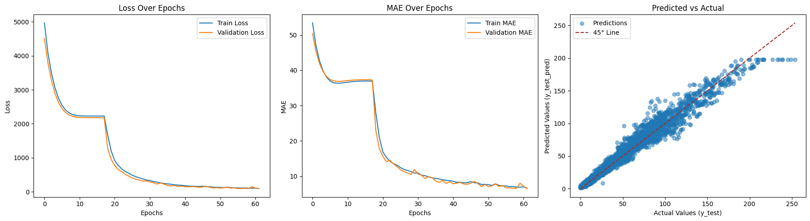

Preventative Maintenance
Predictive Maintenance and Prognostics
Predictive maintenance and prognostics use AI and machine learning to transform continuous machine sensor data into early, actionable insights about asset health and failure risk. By learning degradation patterns over time, these models forecast remaining useful life, detect emerging faults, and enable maintenance decisions to be made before unplanned downtime occurs. The result is higher reliability, lower maintenance cost, and a shift from reactive repairs to data-driven, proactive asset management.
Sensor Data
As an example, the NASA CMAPSS dataset consists of multivariate time-series sensor data collected from simulated turbofan engines operating under varying conditions. It includes operational settings and multiple physical sensor measurements (e.g., temperatures, pressures, and rotational speeds) recorded across engine life cycles from initial operation through degradation and failure
Remaining Useful Life
Remaining Useful Life (RUL) estimates how long an asset can operate before failure based on degradation patterns in sensor data. The curves show a slow early-life phase followed by a sharp rise in failures as assets approach end of life, with RUL ≈ 100 marking a key transition where degradation accelerates and failure risk increases. This insight helps define the optimal window for proactive, data-driven maintenance decisions.
Initial Models to predict RUL
To start, this study compares time-series models for Remaining Useful Life prediction, including LSTMs, bidirectional LSTMs, CNN-LSTMs, and Transformers. Simple recurrent and CNN-LSTM models perform best, capturing local temporal patterns and gradual degradation. Transformers and bidirectional models underperform due to limited sequence length, smooth degradation, and lack of informative future context. Overall, model complexity alone does not ensure better accuracy; alignment with the underlying degradation process is key.
Finalizing Model
This LSTM architecture suits Remaining Useful Life prediction by matching the sequential, gradual degradation in sensor data. Stacked layers capture both short- and long-term trends, while dropout limits overfitting without adding complexity. Optional attention and dense layers highlight key time steps, enhancing signal extraction with minimal extra parameters. With few trainable parameters, the model generalizes well across assets and conditions, even with limited data. Overall, this low-complexity design offers strong performance, stability, and interpretability, making it practical for real-world prognostics.
Final Model Results
The LSTM model shows stable and consistent convergence, with both training and validation loss decreasing smoothly over epochs. The close alignment between training and validation curves indicates strong generalization and minimal overfitting. Mean Absolute Error steadily declines and stabilizes at a low level, demonstrating reliable predictive accuracy. The predicted versus actual plot shows a strong linear relationship, with most points closely following the 45-degree reference line. This indicates the model captures the underlying temporal patterns effectively across the target range. The stacked LSTM architecture with dropout provides sufficient capacity without unnecessary complexity. Overall, the results suggest the model is robust, well-regularized, and suitable for production use.